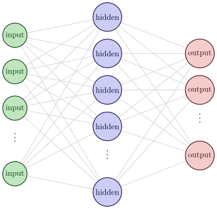
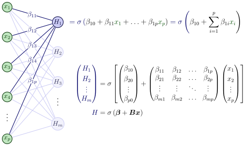
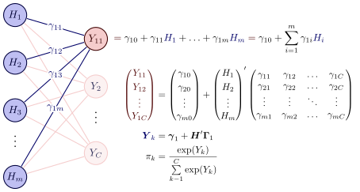
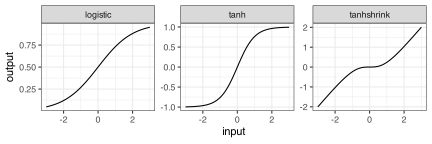
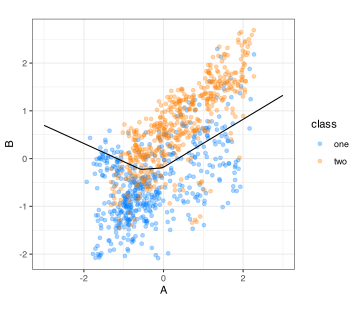
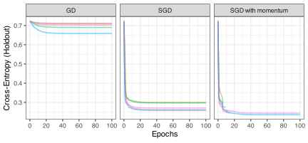

18 Neural Network Classifiers
This chapter contains three sections on neural networks. The first describes the most basic version of these models, called the multilayer perceptron. The fundamentals of these models are discussed in this section. The second section explores various methodologies to enhance the performance of neural network models for tabular data, similar to their effectiveness in predicting images and text. At the time of this writing, substantial research on this topic is underway in the field. This section will also discuss one of the most effective tools for most deep learning models: attention-based transformers.
18.1 Multilayer Perceptrons
Neural networks are complex models comprised of multiple hierarchies of latent variables designed to represent different motifs in the data. The model’s architecture consists of a series of layers, each containing a set of units. Neural networks begin with the input layer that contains units representing our predictors. After this are one or more hidden layers, each containing a preset number of hidden units. These are artificial features that are influenced by the layer before. For example, if there were four predictors and the first hidden layer had two hidden units, each hidden unit is defined by an equation that includes each of the predictors. In the broadest sense, it is similar to how, in PCA, each principal component is a linear combination of the predictors. However, the similarities between neural networks and PCA end there.
These connections between units on different layers continue as layers are added. Eventually, the last layer is the output layer. For classification, this usually has as many units as there are class levels in the outcome. Figure 18.1 shows a general architectural diagram for a basic model with a single hidden layer, where the lines indicate that a model parameter exists to connect the nodes.
Traditionally, the connections that come into a hidden unit are combined using a linear predictor: each incoming unit has a corresponding slope, called a “weight” in the neural network literature1. The linear combinations commonly include an intercept term (called a “bias”). These linear predictors are embedded within a nonlinear “activation” function (\sigma) to enable complex patterns. An example of an activation function would be a sigmoidal function, much like the logistic function used in Equation 16.3.
In this section we will primarily be concerned with multilayer perceptrons (MLPs), a subset of the broader class of neural networks. MLPs are feed-forward models, meaning each layer only connects to the subsequent layer; there are no feedback loops where future units connect to units in previous layers.
As a counterexample, residual networks (He et al. 2016) are connected to previous layers (a.k.a. skip layers); therefore, they are not multilayer perceptrons. Another popular example is the long-term short memory model for sequential data such as time series (Hochreiter and Schmidhuber 1997).
Let’s walk through the network structure, starting at the input layer. We have predictors x_1, \ldots x_p. These will be mathematically connected to the next layer containing m hidden units H_\ell (\ell=1, \ldots m). First, we create a separate linear predictor for hidden unit H_l denoted as \beta_{\ell 0} + \beta_{\ell 1} x_{1} + \ldots + \beta_{\ell p} x_{p}. We then embed this inside the activation function \sigma() used for this layer so that there is a nonlinear relationship between the predictors and their new representation. Visually2:

As we add more layers, each of the first set of hidden units is similarly connected to the hidden units in the next layer, and so on. The layers do not have to use the same activation function. Also, the layers can be specialized, such as the image processing layers shown in Figure 1.3. For each hidden layer, we have to specify the number of units and the activation function. These, along with the number of layers, are tuning parameters.
Note that the units in the subsequent hidden layer are nested inside linear combinations of the previous hidden layers (plus the input units). These models have sets of nested nonlinear functions and can be very complex, but are mathematically tractable.
For the final layer, the previous set of hidden units is often connected to the output units using a linear activation. For classification, there are often C output units (i.e., one for each class):

Since linear activation is used for the final layer, the values of the output units (Y) are unlikely to be in the proper units for classification. To remedy this, the raw outputs are normalized to be probability-like via the softmax function:
\pi_{k} = \frac{\exp(Y_{k})}{\sum\limits_{k=1}^C \exp(Y_{k})}
In this section, we’ll describe the important elements of multilayer perceptrons, such as the different types of activation functions. We’ll walk through a small but specific model.
In later sections, we’ll also spend a considerable amount of time discussing the various methods for training MLPs. There are also discussions on modern deep learning models that are specifically designed for tabular data. These are discussed below.
18.1.1 Activation Functions
Historically, the most commonly used nonlinear activation functions were sigmoidal. This means that the linear combination of the elements in the previous layer was converted into a “squashed” format, typically bounded (e.g., logistic activation values range between 0 and 1). Figure 18.2 shows several such functions. The logistic (Equation 16.3) function and hyperbolic tangent are fairly similar in shape, and were typical defaults.

One issue with bounded sigmoidal shapes, particularly the logistic function, is that they can become problematic when used in conjunction with many hidden layers. Since the logistic function is on [0, 1], repeated multiplication of such values can cause their values to converge to be very close to zero (as seen in Section 17.1.1). This is also true of their gradients, leading to the vanishing gradient problem. This is likely not an issue with shallow networks that have a handful of hidden layers.
The tanshrink function diminishes the impact of inputs that are in a neighborhood around zero, where it is sigmoidal. For larger input values, the output is linear in the output (with an offset of \pm 1).
In modern neural networks, the rectified linear unit (ReLU) is the default activation function. As shown in Figure 18.3, the function resembles the hinge functions used by MARS; to the left of zero, the output is zero, and otherwise, it is linear. Much like MARS, this has the effect of isolating some region of the predictor space. However, there are a few key differences. MARS hinge functions affect a single predictor at a time, while neural networks’ activation functions act on the linear combination of parameters. Also, neural networks with multiple layers recursively activate linear combinations inside the prior layers (and so on).

There are various modified versions of ReLU that emulate the same form but have continuous derivatives. These are also shown in Figure 18.3, including softplus (Dugas et al. 2000; Glorot, Bordes, and Bengio 2011), gelu (Hendrycks and Gimpel 2016), silu (Elfwing, Uchibe, and Doya 2018), elu (Clevert, Unterthiner, and Hochreiter 2015), and others. ReLU, and its offspring activation functions, appear to solve the issue of vanishing gradients.
Let’s use an example data set with a simple MLP to demonstrate how ReLU activation works. Figure 18.4 displays the results of a model with a single layer comprised of four hidden units, utilizing ReLU activation. The model converged in 56 epochs and does a good job discriminating between the two classes.

With two predictors and four hidden units, the first set of coefficients for the model is four sets of linear predictors (i.e., an intercept and two slopes) for each of the four hidden units. The predictors were normalized to have the same mean and variance (zero and one, respectively). The four equations produced during training were:
\begin{alignat*}{4} H_{1} &{}={} & - & 0.32 & {}-{} & 0.09\,A & {}+{} & 0.14\,B \\ H_{2} &{}={} & & 0.30 & {}+{} & 0.86\,A & {}-{} & 0.83\,B \\ H_{3} &{}={} & - & 0.11 & {}-{} & 0.60\,A & {}-{} & 0.51\,B \\ H_{4} &{}={} & & 0.50 & {}-{} & 0.06\,A & {}+{} & 0.59\,B \end{alignat*}
The first hidden unit has fairly small coefficients relative to the others. The second is almost equally weighted by both predictors, but with different signs. The slope coefficients within the third unit are also in parity, but both are negative. Finally, the fourth is mostly driven by the second predictor and has the largest intercept (a.k.a. bias) term of the four.
The top of Figure 18.5 displays a heatmap illustrating how these four artificial features vary across the two-dimensional predictor space (before activation). The black line segments show the contour corresponding to zero values. The first panel shows weak coefficients for the first unit; the light colors indicate a muted effect on the model. The second and third panels show stronger effects and are nearly mirror images. The fourth panel demonstrates the strong slope for the second predictor. The contour shows that most of the effect is in the vertical direction.

The figure’s bottom panels illustrate the effect of the ReLU function, where values less than zero are set to zero. At this point, H_{2} and H_{3} have the most substantial effect on the model when judged on the sum of their absolute coefficients. From the contour plot, their patterns are nearly opposites.
However, the model estimates additional parameters that will merge these regions using weights that are estimated to be most helpful for predicting the data. Those equations were estimated to be:
\begin{alignat*}{6} Y_{1} &{}={} & & 0.18 & {}+{} & 0.24\,H_{1} & {}+{} & 0.91\,H_{2} & {}+{} & 0.77\,H_{3} & {}-{} & 0.92\,H_{4} \\ Y_{2} &{}={} & - & 0.15 & {}+{} & 0.27\,H_{1} & {}-{} & 0.13\,H_{2} & {}-{} & 0.65\,H_{3} & {}+{} & 1.12\,H_{4} \end{alignat*}
Figure 18.6 illustrates the transition from the hidden layer to the outcome layer. The weighted sum of the four variables at the top produces the regions of strong positive (or negative) activation for the two classes. Once again, the black curve indicates the location of the zero contour.

The two output panels at the bottom of the figure show nearly opposite patterns, which is not coincidental. The model converges to this structure, allowing the output units to favor one class or the other. The legend on the bottom right clearly shows inappropriate units; we’d like them to resemble probabilities. As previously mentioned, the softmax function coerces these values to be on [0, 1] and sum to one. This produces the class boundary seen in Figure 18.4.
As previously stated in Section 17.1.2, ReLU is not a smooth function, so this demonstration will somewhat differ from the other activation functions; they generally don’t completely isolate regions of the predictor space. However, the overall flow of the network remains the same.
Now that we’ve discussed the architecture of these models and how the layers relate to one another, let’s examine how to estimate model parameters effectively.
18.1.2 Training and Optimization
Training neural networks can be challenging. Their model structure is composed of multiple nested nonlinear functions that may not be smooth or continuous. The loss function for classification, commonly cross-entropy, is unlikely to be convex as model complexity increases with the addition of more layers. Consequently, we have no guarantees that a gradient-based optimizer will converge. There is also the possibility of local minima that might trap the training process, saddle points that could lead the search in the wrong direction, and regions of vanishing gradients (Hochreiter 1998).
First is the challenge of local minima. In some cases, ML models can provide some guarantees regarding the existence of a global minimum loss value3. This may not be the case for neural networks. Their loss surface may contain multiple valleys where the derivatives of some of the parameters are zero, but a better solution exists in another region of the parameter space. In other words, the model can appear to converge but has suboptimal performance. Baldi and Hornik (1989) show that, under some conditions, single-layer feedforward networks can have a unique global minimum. It is expected that as more layers and units are added, the probability of finding a unique optimal solution decreases. When “caught” in a local valley, we need our optimization algorithm to be able to escape.
A second related issue is saddle points. These are locations where all of the gradients are zero (i.e., a stationary point), but some directions have increasing loss, and others will produce a decrease. Dauphin et al. (2014) postulate that these will exist, and their propensity to occur increases with the number of model parameters. The concern here is that, depending on the type of multidimensional curvature encountered, the optimization algorithm may move in the direction of increasing loss or become stuck.
Figure 18.7 has an example with two parameters and a highly nonlinear loss surface. There are four stationary points, the best of which minimizes the loss function at \boldsymbol{\theta} = [6.8, 0.2]. The lower right region has a point associated with maximum loss. The other two locations are saddle points. The point at \boldsymbol{\theta} = [6.9, -0.3] is a good example; moving to the left or right of the point will increase the loss. Moving up or down will decrease the loss (with the upper value being the correct choice in this parameter range). Our optimizer should be able to move in the proper direction or, like simulated annealing, recover and move back to progressively better results.

Another possible factor is that many deep learning models are trained on vast amounts of data. This in itself presents constraints on how much data can be held in memory at once, as well as other logistical issues. This may not be an issue for the average application that uses tabular data; however, the problem still persists.
Before proceeding, recall Section 12.2 where gradient descent was introduced. There are two commonly used classes of gradient-based optimization:
First-order techniques: \quad\boldsymbol{\theta}_{i+1} = \boldsymbol{\theta}_i - \alpha\,g(\boldsymbol{\theta}_i),
Second-order methods: \quad\boldsymbol{\theta}_{i+1} = \boldsymbol{\theta}_i - \alpha H(\boldsymbol{\theta_i})^{-1}\,g(\boldsymbol{\theta}_i),
where \boldsymbol{\theta} are the unknown parameters, \alpha is the learning rate, g(\boldsymbol{\theta}_i) is the gradient vector of first derivatives, and H(\boldsymbol{\theta_i}) is the Hessian matrix of second derivatives. The Hessian measures the curvature of the loss function at the current iteration. Pre-multiplying by its inverse rescales the gradient vector, generally making it more effective. We’ll discuss them both in Section 18.1.9 and Section 18.1.10. Generally speaking, second-order methods are preferred since they are more accurate when they are computationally feasible. However, first-order search is more commonly used because it is faster to compute and can be significantly more memory-efficient.
To demonstrate, we can use an MLP model for the forestation data that contains one layer of 30 ReLU units and an additional layer of 5 ReLU units, yielding 677 model parameters. An L2 penalty of 0.15 was set to regularize the cross-entropy loss function. A maximum of 100 epochs was specified, but training was instructed to stop after five consecutive epochs with a loss increase (measured using held-out data). An initial learning rate of \alpha = 0.1 was used, but a variable, step-wise rate schedule was implemented to modulate the rate across epochs, as described below.
The model was first trained using basic gradient descent. For illustration, training was executed five times using different initial parameter values. The leftmost panel in Figure 18.8 shows the results. In each case, the loss initially decreased in the first set of epochs. However, in each case, the model used all 100 epochs. This approach was not very successful. There was little reduction in the loss function, and the terminal phase had a minuscule decrease with no real improvement. This could be due to the search approaching the saddle point. In this case, the gradient becomes very close to zero, and first-order gradient searches have tiny, ineffective updates. We can measure the efficiency of optimizers by computing the time it takes to train a complete iteration. For gradient descent, the time was 0.013s per iteration.

When training neural networks, stochastic gradient descent (SGD) is the standard approach. SGD uses randomly allocated batches training set samples. The gradient search is updated by processing each of these batches until the entire trained set has been used, which signifies the end of that epoch. In other words, a potentially large number of parameter updates are computed based on a small number of training point samples. The batch size used here was 64 data points. As a result, for this training set size, about 76 gradient updates are executed before the model has seen all of the training data.
For stochastic gradient descent, we track the process by epochs. An epoch is finished when the model has been updated using every data point in the training set. For this analysis, this means that there are about 76 parameter updates within an epoch. For regular gradient descent and second-order search methods, we’ll count their progress as iterations since there are no batches.
As shown in Figure 18.8, SGD does far better than plain GD and although none stop early, there is a relatively flat trend after about 20 epochs, where the search does not substantially reduce the loss. In terms of time per epoch, SGD takes much longer than GD at 0.163s.
As we’ll see in the section below, many extensions to SGD have made it more effective. One improvement is to use Nesterov momentum (Sutskever et al. 2013). This initially computes a standard update to the parameters, then approximates the gradient at this position to compute a second prospective step. The actual update that is used is the lookahead position. This technique yields better results than SGD, with several iterations stopping early. However, the training time was longest, using 0.24s per epoch.
The intended takeaways from this exercise are that training these models can be challenging and that the type of parameter optimization can significantly impact model quality.
Let’s discuss a few operational aspects of gradient-based methods before discussing the first- and second-order search techniques.
18.1.3 Initialization
Network parameter initialization can significantly impact the success of training. Given the size and complexity of these models, it is nearly impossible to analytically derive optimal methodologies for setting initial values. As such, parameters are initialized using random numbers. This means that different initial values will results in different model parameter estimates.
There are a few approaches for simulating initial values. LeCun et al. (2002) initialization uses a uniform distribution centered around zero with limits defined by the number of connections feeding into the current node (known as the “fan in” and is denoted as m_{in}). They used U(\pm \sqrt{2/m_{in}}) as the distribution. There have been a few variations of this:
- Glorot/Xavier initialization (Glorot and Bengio 2010): U(\pm \sqrt{6/(m_{in}+m_{out})})
- He/Kaiming initialization (He et al. 2015): N(0, \sqrt{2 / m_{in}}).
where m_{out} is the number of parameters leaving the node.
One reason that initialization is important is to help mitigate numerical overflow errors. For example, the softmax transformation shown above exponentiates the raw output units (and sums them). If the output units have relatively large values, exponentiating and summing them can exceed allowable tolerances. For example, the output units shown in Figure 18.6 have a wide enough range that can be as large as 5.
18.1.4 Preprocessing
Neural networks require complete, numeric features for computations.
For non-numeric data, the tools described in Chapter 6 can be very effective. Additionally, there are pretrained neural network models that can translate the category string to a word embedding (Boykis 2023), such as BERT (Devlin et al. 2019) or GPT-4 (Achiam et al. 2023). The potential upside to doing this is that the resulting numeric features may measure some relative context between categorical values. For example, suppose we have a predictor with levels red, darkred, green, chartreuse, and white. Basic encoders, such as binary indicators or hashing features, would not recognize that there are three clusters in these values and that sets such as {red, darkred} and {green, chartreuse} should have values that are “near” one another. LLMs can measure this semantic similarity and potentially generate more meaningful features.
If the non-numeric predictors are not complex, a layer could be added early in the network, enabling the model to derive encodings based on the data when training. Guo and Berkhahn (2016) describes a relatively simple architecture for doing this. While LLMs are better at creating embeddings overall, they are unaware of the context in your data. Estimating the parameters associated with a simple embedding layer may be more effective, as it is optimized for your dataset.
For numeric predictors, we suggest avoiding irrelevant predictors and highly collinear feature sets. Figure 13.1 in Chapter 13 demonstrated the harm of including predictors unrelated to the outcome in a neural network. Multicollinearity can also affect these models, even if we do not invert the feature matrix or use the Hessian during optimization. Highly redundant predictors can result in the loss function having difficult characteristics and a large number of unnecessary parameters. Using an L2 penalty or a feature extraction method can be very helpful.
Also, predictors with highly skewed distributions might benefit from a transformation to make their distribution more symmetric. If not, outlying values can exert significant influence in computations, potentially preventing the generation of high-quality parameter estimates.
Finally, since the networks use random initialization, we should ensure that our predictors are standardized to have the same units. If there are only numeric predictors, centering/scaling or orderNorm operations can be very effective4. Using this approach, we must also apply the same standardization to binary indicators created from categorical predictors. Alternatively, we could leave 0/1 indicators as-is, but range scale our predictors to also be between zero and one. This may have a disadvantage; the range will be common across predictors, but the mean and variance can be quite different.
18.1.5 Learning Rates
The learning rate (\alpha) can profoundly affect model quality, perhaps more than the structural tuning parameters that define complexity (e.g., number of hidden units). A high learning range (\approx 0.1) will help converge towards effective parameter estimates, but once there, it can cause the model to consistently overshoot the best location. One approach to modulating the rate is to use a scheduler (Lu 2022,chapt 4). These are functions/algorithms that will change the rate (often to decrease it) over epochs. For example, to monotonically decrease the rate, two options are:
- inverse decay: f(\alpha_0, \delta, i) = \alpha_0/(1 + \delta i)
- exponential decay: f(\alpha_0, \delta, i) = \alpha_0\exp(-\delta i)
where i is the epoch number and \delta is a decay value. These two functions gradually decrease the rate so that, when near an optimum, it is slow enough not to exceed the optimal settings. Another approach is a step function that decreases the rate but maintains it at a constant level for a range of epochs. Those ranges can be predefined or set dynamically to decrease when the loss function is reduced. The function for the former is:
- step decay: f(\alpha_0, \zeta, r, i) = \alpha_0 \zeta^{\lfloor i/r\rfloor}
where \zeta is the reduction value, r is the step length, and \lfloor x\rfloor is the floor function.
Finally, some schedulers modulate the rate up and down. A cyclic schedule (Smith 2017) starts at a maximum value, decreases to a minimum value, and then increases cyclically. For some range r and minimum rate \alpha_0, an epoch’s location within the series is cycle = \lfloor 1 + (i / (2r) )\rfloor and the rate is
- cyclic: f(\alpha_0, \alpha, r, i) = \alpha_0 + ( \alpha - \alpha_0 ) \max(0, 1 - x)
where x = |(i/r) - (2\,cycle) + 1|. This is a good option when we are unsure how fast or slow the convergence will be. If the rate is too high near an optimum value, it will soon decrease to an appropriate value. Additionally, if the search is stuck in a local optimum (or a saddle point), increasing the learning rate may help it escape.
Figure 18.9 uses the loss function example from Figure 18.7 to demonstrate the effect of rate schedulers. Two starting points are used. One (in orange) is very close to a saddle point, while the other starts from the upper right corner of the parameter space (in green).

Using a constant learning rate of \alpha = 0.1, the search marches to the optimum value, but oscillates wildly on approach. Ultimately, it falls short of the best estimates, as it is constrained to make large jumps on each iteration. The cyclic schedule allowed rates to move between \alpha_0 = 0.001 to \alpha = 0.1 with a cycle range of r = 10 epochs. This appears to work well, or at least, it had good timing. The decay panel represents inverse decay with \delta = 0.025. For the corner starting point, this is a very effective strategy. From the saddle point, we can observe that decreasing the learning rate results in fewer oscillations as the search progresses and eventually leads to the optimum. Finally, the panel for stepwise reduction used an initial learning rate of \alpha_0 = 0.1, \eta = 0.5, and a step length of 20 epochs. This approach worked well when the search began from the saddle location, but performed poorly when starting at the corner. The success depended on when the search was near the optimum; if not timed right, the oscillations were too wide to converge on the best point. A reduction in the step length might help.
The schedule type and its additional parameter(s) are added to the list of possible values that could be optimized during tuning.
18.1.6 Regularization
As seen in a previous chapter, we can add a penalty to the loss function to discourage particularly large model coefficients. This is especially beneficial for neural network models.
While Hanson and Pratt (1988) and Weigend, Rumelhart, and Huberman (1990) made some early proposals for penalizing the size of the estimated parameters, Krogh and Hertz (1991) proposed to use L2 regularization to improve generalization. This is now a standard approach for training neural networks, and “weight decay” is now synonymous with squared penalties.
While either L1, L2, or a mixture of the two can be used, there is some reason to use just L2 penalization. While either type of penalty might be able to combat multicollinearity, the quadratic penalty has the advantage of maintaining a smooth loss surface. With an L1 penalty, we have at least one point on the loss surface that is not differentiable. Also note that using the L1 penalty will not produce exact zeros in the parameter estimates when using stochastic gradient descen.
As we will describe later in this chapter, Loshchilov and Hutter (2017) note that there are cases when penalizing the loss function does not precisely match the definition of weight decay (in the neural network context of Hanson and Pratt (1988)). Their adjustment for these issues is called the “AdamW” method.
Another regularization technique is called dropout. This method randomly removes some units (hidden or not) from the network. This drops incoming and outgoing connections to other units, which propagates through all of the layers. These temporary coercions to zero recur with each evaluation of the gradient. In the final training step, a full set of parameters is used. Dropout has an effect similar to averaging many smaller networks. The amount of dropout should be tuned.
18.1.7 Early Stopping
When should training stop? We can estimate the number of epochs that might be needed, but if we make an incorrect guess, we risk under- or overfitting the model. It makes sense to include the number of epochs as a tuning parameter, but this could be costly5.
If we have some data to spare, an efficient and effective approach is to use early stopping. If we set aside a small proportion of the training set to measure the search’s progress, we can set the maximum number of epochs and stop training when the loss worsens (based on our holdout set). Often, we can tune the number of “stopping epochs.”. If this value were five, we would stop training after five consecutive epochs where the loss function worsens (and use the parameter estimates from our last best epoch). Values greater than one protect against overreacting when the loss profile is noisy.
18.1.8 Batch Learning
Operationally, within each epoch, a random batch is selected to evaluate the gradient and corresponding update the parameters. This occurs for each batch until the entire set is evaluated. This is the end of the epoch. If we are monitoring a holdout set for early stopping, this is the point at which we evaluate the loss function at the current parameter estimate using the holdout set. After this, the process begins again by iterating through the batches.
SGD is thought to work well because it injects a considerable amount of variation into the gradients and updates. This would generally be considered a bad thing, but, as with simulated annealing, it makes the optimization less greedy. The somewhat noisy directions the optimizer takes can help the optimization escape from local optimums and be more resilient when the search veers near a saddle point or other regions where the gradient may be flat or consistently zero. Hoffer, Hubara, and Soudry (2017) referred to SGD as a “high-dimensional random walk on a random potential” process.
As the search proceeds, lowering the learning rate can mitigate the extra noise in the gradients so that, hopefully, the search does not move away from the best parameter estimates.
We can tune the batch size if there is no intuition for what a good value might be. Smallish batch sizes could range from 16 to 512 training set points6, depending on the training set size. Keskar et al. (2016) remarks that smaller batches tend to explore the parameter space more thoroughly and that, as the batch size becomes larger, SGD will find a solution that is closer to the initial values.
Loshchilov and Hutter (2017) make a few interesting observations related to L2 penalization with stochastic gradient descent. Their results show that as the number of batches increases, the optimal penalization becomes smaller. In other words, as the batch size decreases, the amount of penalization should also decrease.
18.1.9 Gradient Descent Algorithms
Gradient descent methods for training neural networks have become a popular research topic over the last 15 years. We’ll discuss a few major techniques here, but there are myriad other tools for training these models. In this section, we’ll temporarily forgo discussing changes from epoch to epoch. Since we are focused on SGD, we’ll use the term update to refer to the point at which the parameters move to a different location due to a batch step.
Momentum
To start, let’s consider a more common form of momentum in gradient search7 Momentum is a useful tool that can help in situations such as the results in Figure 18.9, where the updates make the search path make large, ineffective jumps. When the learning rate is consistently large, the search route bounces back and forth since the gradients are substantial in magnitude but moving in different consecutive directions.
Momentum is one of several tools to adjust the gradient vector based on previous gradients. For iteration i, a vector is computed that is a combination of the current and previous gradients8:
v_i = \phi v_{i-1} + \alpha_i g(\boldsymbol{\theta}_i)
and this is used to make the update \boldsymbol{\theta}_{i+1} = \boldsymbol{\theta}_i - v_i. This weighting system emphasizes recent gradients while also taking into account previous gradients. This can accelerate the search and diminish oscillations.
Values of \phi are typically between 0.8 and 0.99, representing a weighted average of previous gradient directions, with a greater emphasis on recent iterations as \phi increases. If the directions have been fairly stable, there is little change; however, if they are oscillating, the direction takes a more consistent central route with fewer directional jumps. It also helps if the search is in a region where gradients are close to zero; historical gradients will have some non-zero values that are unlikely to become stuck with updates near zero.
Figure 18.10 shows the results when momentum is used for our 2D toy example9. The cyclic rate settings were used for this example, and the results appear very similar to the previous path when initialized near the saddle point. The corner point starting value shows that momentum can lead to a location near the optimal value, but takes a more circuitous route.

Momentum should be used in conjunction with a rate scheduler, or at the very least, without a consistently large learning rate. Making very large jumps in a central direction might lead the search to points far away from regions of improvement. Penalization also helps.
Adaptive Learning Rates
There is also a class of gradient descent methods that try to avoid using a single learning rate for all of the elements of \boldsymbol{\theta}. Instead, they use a constant learning rate and, at each update, adjust the rate using functions of the gradient vector so that the rates are different from each \theta_j.
One approach is the adaptive gradient algorithm, a.k.a. AdaGrad (Duchi, Hazan, and Singer 2011), that scales the constant learning rate \alpha by the accumulated square of the gradients:
\boldsymbol{v}_i =\sum_{b=1}^t g(\boldsymbol{\theta}_b)^2 so that
\boldsymbol{\theta}_{i+1} = \boldsymbol{\theta}_i - \frac{\alpha}{\sqrt{\boldsymbol{v}_i + \epsilon}}\, g(\boldsymbol{\theta}_i)
where \epsilon is a small constant to avoid division by zero. The square root in the denominator is required to keep the denominator units the same as those in the numerator. AdaGrad has the advantage of keeping the adjusted learning rate steady for elements of g(\boldsymbol{\theta}) that do not change substantially from update to update. At update i, the contribution to the learning rate is inversely proportional to the squared gradient value.
The problem is the unweighted accumulation of squared values. For a reasonable number of updates, elements of \boldsymbol{v} can explode to very large values, and this prevents almost any movement of \boldsymbol{\theta} from update to update. For the example shown in Figure 18.10, some of these values were in the thousands, and progress clearly halted before reaching the optimal parameters.
One method of fixing this problem is RMSprop (Hinton 2012). Here, the denominator uses an exponentially weighted moving average of the squared gradients:
\boldsymbol{v}_i = \rho\, \boldsymbol{v}_{i-1} + (1 - \rho)\, g(\boldsymbol{\theta}_i)^2
This formulation places more weight on the current and recent gradients than the statistic used by AdaGrad. The RMSprop update becomes:
\boldsymbol{\theta}_{i+1} = \boldsymbol{\theta}_i - \frac{\alpha}{\sqrt{\boldsymbol{v}_i + \epsilon}}\, g(\boldsymbol{\theta}_i).
The “RMS” in the name is due to taking the square root of the weighted sum of squared gradients (i.e., similar to a traditional root mean square).
Goodfellow, Bengio, and Courville (2016) suggested using RMSprop with Nesterov momentum. This leads to a more complicated procedure. First, we compute our initial update: \quad\tilde{\boldsymbol{\theta}}_{i} = \boldsymbol{\theta}_{i} - \phi\,\boldsymbol{\delta}_{i-1} where \boldsymbol{\delta}_0 is initialized with a vector of zeros. We compute the gradient at this temporary update and use this to compute \boldsymbol{v}_i. From here:
\boldsymbol{\delta}_{i} = \phi\,\boldsymbol{\delta}_{i-1} - \frac{\alpha}{\sqrt{\boldsymbol{v}_i + \epsilon}}\, g(\tilde{\boldsymbol{\theta}}_i)
The results are in Figure 18.10. The curves are similar to those for AdaGrad except that they do reach the location of minimum loss. The path for the starting value near the saddle point exhibits several minor oscillations en route to the optimal result.
The adaptive moment estimation (Adam) optimizer from Kingma and Ba (2017) extends the moving average approach to the gradient term as well:
\begin{align} \boldsymbol{m}_i &= \phi\, \boldsymbol{m}_{i-1} + (1 - \phi)\, g(\boldsymbol{\theta}_i) \notag \\ \boldsymbol{v}_i &= \rho\, \boldsymbol{v}_{i-1} + (1 - \rho)\, g(\boldsymbol{\theta}_i)^2 \notag \end{align}
Adam also tries to normalize these quantities so that the first few updates have larger values:
\begin{align} \boldsymbol{m}^*_i &= \frac{\boldsymbol{m}_i}{1 - \phi^i}\notag \\ \boldsymbol{v}^*_i &= \frac{\boldsymbol{v}_i}{1 - \rho^i} \notag \end{align}
This helps offset the initialization of \boldsymbol{m}_0 = \boldsymbol{v}_0 = \boldsymbol{0}. At update i, Adam’s proposal is
\boldsymbol{\theta}_{i+1} = \boldsymbol{\theta}_i - \frac{\alpha}{\sqrt{\boldsymbol{v}^*_i + \epsilon}}\,\boldsymbol{m}^*_i.
The results above show that Adam’s path towards the optimal parameters is slightly wobbly compared to RMSprop but otherwise effective.
Both \phi and \rho are tunable in these models and typically range within [0.8, 0.99]. The constant learning rate \alpha is also tunable. In Figure 18.10, \phi=\rho=0.9. AdaGrad, Adam, and RMSprop used \alpha = 0.1. For RMSprop, decreasing the rate to \alpha = 0.08 removed the oscillation effects shown in Figure 18.10.
As previously alluded to, Loshchilov and Hutter (2017) recognized that, for Adam, penalizing the loss function does not align with the definition of weight decay. Without a remedy, they found that Adam is not as effective as it could be. Their method, called AdamW, includes the penalty in the gradient definition. The gradient used to compute \boldsymbol{m}_i and \boldsymbol{v}_i is a combination of the previous “raw” gradient and the penalty (\lambda):
g(\boldsymbol{\theta}_i) = \nabla \psi(\boldsymbol{\theta}_{i}) - \lambda \boldsymbol{\theta}_{i}
The updating equation also uses an extra term containing the penalty:
\boldsymbol{\theta}_{i+1} = \boldsymbol{\theta}_i - \alpha_i\left[\frac{\boldsymbol{m}^*_i}{\sqrt{\boldsymbol{v}^*_i + \epsilon}} + \lambda \boldsymbol{\theta}_{i}\right].
Note that the learning rate \alpha now has a subscript. They also recommend trying a cyclic learning rate scheduler with AdamW.
AdamW has become very popular for training and has superseded Adam.
Other Methods
As previously mentioned, there are numerous other variations of SGD that will not be discussed here, including AdaMax (Diederik and Ba 2015), Nadam (Dozat 2016), MadGrad (Defazio and Jelassi 2021), and others.
18.1.10 Newton’s Method
As previously shown, Newton’s method (a.k.a., the Newton–Raphson method) uses both gradients and the Hessian matrix to update parameters. This approach can be very effective when the local loss surface can be approximated by a second-degree polynomial. When the local search includes a stationary point, the signs of the eigenvalues of the Hessian can characterize it: all non-negative imply a maximum, all non-positive imply a minimum, and mixed signs indicate a saddle point.
One issue with the method is related to the Hessian. If there are p parameters, the matrix needs to save p(p+1)/2 parameters. For neural networks, p can be in the millions, so the basic application of Newton’s method can be slow and might require infeasible amounts of memory (depending on the model size). We also need to invert the Hessian, making it even more costly.
We can approximate Newton’s method using the Limited-memory Broyden–Fletcher–Goldfarb–Shanno algorithm (L-BFGS) search (Lu 2022,chapt 6). It uses past gradients to approximate the Hessian as the search proceeds. L-BFGS computes gradients at different values of \boldsymbol{\theta} for more than just updating the parameters (i.e., Hessian approximation and the line search), so it is not a good solution when loss function or gradient evaluations are expensive.
However, if we have a small dataset, a low-to-medium complexity architecture, or both, L-BFGS can be a very effective tool for estimating parameters.
18.1.11 Forestation Modeling
For the forested data, there are a few options for preprocessing:
- Use binary indicators to represent the 39 counties or a supervised effect encoding strategy.
- Several predictors are highly skewed. We can leave them as-is before centering/scaling, or use an orderNorm transformation to coerce each predictor to a standard normal distribution.
- Deal with the high correlation for some predictors via PCA extraction or leave as-is in the data.
Several combinations of these operations were used:
- An effect encoding with and without PCA feature extraction.
- Standard binary indicators with and without PCA feature extraction and with and without a symmetry transformation (i.e., orderNorm versus centering/scaling).
For the PCA extraction, all possible components were used.
For the model, there are a fair number of tuning parameters to combine:
- One or two layers.
- The number of hidden units. For each layer, these ranged from two to fifty units.
- The activation type: ReLU, elu, tanh, and tanhshrink.
- L2 regularization values between 10-10 and 10-1.
- Batch sizes between 23 and 28.
- Learning rates between 10-4 and 10-1.
- Learning rate schedules: constant, cyclic, and time decay.
- Momentum values between [0.8, 0.99].
AdamW was used to train the models, with a maximum of 25 epochs allowed, but early stopping could occur after five consecutive epochs with poor performance.
A space-filling design with 25 candidates was evaluated. The six preprocessing schemes listed above were each run with the same model grid, resulting in 300 candidates to be evaluated.
Figure 18.11 shows the results for the 300 candidates. They are ranked by their resampling estimate of the Brier scores, and the figure presents these rankings from best to worst, breaking out the combinations of preprocessing scenarios. While each panel contains models with sufficiently low Brier scores, several trends are evident. The “Indicators” panel represents models using dummy variable indicators with no symmetry transformation, and this did not do well (with or without PCA feature extraction).

In fact, PCA has suboptimal results in each of the three bottom panels. This could be due to the components being unsupervised; they are not optimized for prediction. Alternatively, the last few components might be measuring noise and have less relevance to the model. Adding irrelevant predictors to neural networks can diminish their effectiveness.
The two cases that did the best were the “Indicators + Symmetry” and “Effect Encoding + Symmetry” panels. While both used the orderNorm transformation, the former panel employed indicators, whereas the latter used a supervised effect encoding, where a single column was used to represent the county effect. This suggests that eliminating distributional skew in the predictors may yield a modest improvement in predictive performance.
| Preprocessing | Architecture | # Parameters | Penalty | Batch Size | Learning Rate | Momentum |
Performance
|
|
|---|---|---|---|---|---|---|---|---|
| Brier | ROC | |||||||
| Effect Encoding, Symmetry, No PCA | 46 elu , 8 relu | 1176 | 10-7.38 | 16 | 10-3.25 (none) | 0.871 | 0.0806 | 0.9515 |
| Indicators, Symmetry, No PCA | 46 elu , 8 relu | 2878 | 10-7.38 | 16 | 10-3.25 (none) | 0.871 | 0.0809 | 0.9496 |
| Effect Encoding, Symmetry, No PCA | 32 tanh | 610 | 10-9.62 | 29 | 10-3.00 (none) | 0.950 | 0.0828 | 0.9472 |
| Indicators, Symmetry, No PCA | 32 tanh | 1794 | 10-9.62 | 29 | 10-3.00 (none) | 0.950 | 0.0829 | 0.9452 |
| Effect Encoding, Symmetry, No PCA | 10 elu | 192 | 10-6.62 | 52 | 10-3.12 (inverse decay) | 0.982 | 0.0842 | 0.9486 |
Digging in further, Table 18.1 displays the top five candidates from a pool of 300. They are a mixture of one- and two-layer networks, but note that we have to go to the third decimal place to distinguish their Brier scores. Constant learning rates did well as long as their rates were fairly low and batch sizes were fairly small. The number of parameters varied as well; increasing the model’s complexity did not appear to help for this dataset. In fact, the rank correlation between the Brier score and the number of parameters was -0.08, implying that there is little evidence that adding more layers and/or units to the MLP improves the model for these data.
The Brier scores are low and the areas under the ROC curves are all at least 0.94, indicating that the predictions effectively separate the classes and that the probability estimates are accurate. Across the candidates, the rank correlation between the Brier score and the ROC AUC was -0.94; in this case, their optimization results are well-aligned.
18.2 Special Tabular Network Models
18.2.1 Batch Normalization
18.2.2 Residual Networks
18.2.3 Attention Mechanisms
18.2.4 Multifocal Attention
18.2.5 Masking Mechanisms
18.3 Foundational Models
Chapter References
Achiam, J, S Adler, S Agarwal, L Ahmad, I Akkaya, F Leoni Aleman, D Almeida, et al. 2023. “GPT-4 Technical Report.” arXiv.
Baldi, P, and K Hornik. 1989. “Neural Networks and Principal Component Analysis: Learning from Examples Without Local Minima.” Neural Networks 2 (1): 53–58.
Boykis, V. 2023. “What Are Embeddings?” https://doi.org/10.5281/zenodo.8015028.
Clevert, DA, T Unterthiner, and S Hochreiter. 2015. “Fast and Accurate Deep Network Learning by Exponential Linear Units (Elus).” arXiv 4 (5): 11.
Dauphin, Y, R Pascanu, C Gulcehre, K Cho, S Ganguli, and Y Bengio. 2014. “Identifying and Attacking the Saddle Point Problem in High-Dimensional Non-Convex Optimization.” Advances in Neural Information Processing Systems 27.
Defazio, A, and S Jelassi. 2021. “Adaptivity Without Compromise: A Momentumized, Adaptive, Dual Averaged Gradient Method for Stochastic Optimization.” arXiv.
Devlin, J, MW Chang, K Lee, and K Toutanova. 2019. “Bert: Pre-Training of Deep Bidirectional Transformers for Language Understanding.” In Proceedings of the 2019 Conference of the North American Chapter of the Association for Computational Linguistics: Human Language Technologies, Volume 1, 4171–86.
Diederik, P, and J Ba. 2015. “A Method for Stochastic Optimization.” In International Conference on Learning Representations (ICLR). Vol. 5. 6. California;
Dozat, T. 2016. “Incorporating Nesterov Momentum into Adam.” In Proceedings of the 4th International Conference on Learning Representations, 1–4.
Duchi, J, E Hazan, and Y Singer. 2011. “Adaptive Subgradient Methods for Online Learning and Stochastic Optimization.” Journal of Machine Learning Research 12 (7).
Dugas, C, E Bengio, F Bélisle, C Nadeau, and R Garcia. 2000. “Incorporating Second-Order Functional Knowledge for Better Option Pricing.” Advances in Neural Information Processing Systems 13.
Elfwing, S, E Uchibe, and K Doya. 2018. “Sigmoid-Weighted Linear Units for Neural Network Function Approximation in Reinforcement Learning.” Neural Networks 107: 3–11.
Glorot, X, and Y Bengio. 2010. “Understanding the Difficulty of Training Deep Feedforward Neural Networks.” In Proceedings of the Thirteenth International Conference on Artificial Intelligence and Statistics, 249–56. JMLR Workshop; Conference Proceedings.
Glorot, X, A Bordes, and Y Bengio. 2011. “Deep Sparse Rectifier Neural Networks.” In Proceedings of the Fourteenth International Conference on Artificial Intelligence and Statistics, 315–23. JMLR Workshop; Conference Proceedings.
Goodfellow, I, Y Bengio, and A Courville. 2016. Deep Learning. MIT press.
Guo, C, and F Berkhahn. 2016. “Entity Embeddings of Categorical Variables.” arXiv.
Hanson, S, and L Pratt. 1988. “Comparing Biases for Minimal Network Construction with Back-Propagation.” Advances in Neural Information Processing Systems 1.
He, K, X Zhang, S Ren, and J Sun. 2015. “Delving Deep into Rectifiers: Surpassing Human-Level Performance on Imagenet Classification.” In Proceedings of the IEEE International Conference on Computer Vision, 1026–34.
He, K, X Zhang, S Ren, and J Sun. 2016. “Deep Residual Learning for Image Recognition.” In Proceedings of the IEEE Conference on Computer Vision and Pattern Recognition, 770–78.
Hendrycks, D, and K Gimpel. 2016. “Gaussian Error Linear Units (Gelus).” arXiv.
Hinton, G. 2012. “Neural Networks for Machine Learning, Lecture 6e.” https://www.cs.toronto.edu/~tijmen/csc321/slides/lecture_slides_lec6.pdf.
Hochreiter, S. 1998. “The Vanishing Gradient Problem During Learning Recurrent Neural Nets and Problem Solutions.” International Journal of Uncertainty, Fuzziness and Knowledge-Based Systems 6 (02): 107–16.
Hochreiter, S, and J Schmidhuber. 1997. “Long Short-Term Memory.” Neural Computation 9 (8): 1735–80.
Hoffer, E, I Hubara, and D Soudry. 2017. “Train Longer, Generalize Better: Closing the Generalization Gap in Large Batch Training of Neural Networks.” Advances in Neural Information Processing Systems 30.
Keskar, NS, D Mudigere, J Nocedal, M Smelyanskiy, and PTP Tang. 2016. “On Large-Batch Training for Deep Learning: Generalization Gap and Sharp Minima.” arXiv.
Kingma, D, and J Ba. 2017. “Adam: A Method for Stochastic Optimization.” arXiv.
Krogh, A, and J Hertz. 1991. “A Simple Weight Decay Can Improve Generalization.” Advances in Neural Information Processing Systems 4.
LeCun, Y, L Bottou, G B Orr, and KR Müller. 2002. “Efficient Backprop.” In Neural Networks: Tricks of the Trade, 9–50. Springer.
Loshchilov, I, and F Hutter. 2017. “Decoupled Weight Decay Regularization.” arXiv.
Lu, J. 2022. Gradient Descent, Stochastic Optimization, and Other Tales. Eliva Press.
Smith, L. 2017. “Cyclical Learning Rates for Training Neural Networks.” In 2017 IEEE Winter Conference on Applications of Computer Vision (WACV), 464–72. IEEE.
Sutskever, I, J Martens, G Dahl, and G Hinton. 2013. “On the Importance of Initialization and Momentum in Deep Learning.” In International Conference on Machine Learning, 1139–47. pmlr.
Weigend, A, D Rumelhart, and B Huberman. 1990. “Generalization by Weight-Elimination with Application to Forecasting.” Advances in Neural Information Processing Systems 3.
For consistency, we’ll use “slopes” and “intercepts” here.↩︎
This representation and the one below were adapted from Izaak Neutelings’s excellent work, which can be found at
https://tikz.net/neural_networks/and is licensed under a CC BY-SA 4.0.↩︎Generalized linear models are a good example of this↩︎
orderNorm is perhaps more attractive since it standardizes the predictors and coerces them to a symmetric distribution.↩︎
Although the submodel trick described in Section 11.3.1 could greatly improve the effectiveness of this approach.↩︎
Typically on log2 units↩︎
In Section 18.1.2, we previously described Nesterov momentum. This is unrelated to the current tool bearing the same name.↩︎
For the first update, the value is simply v_1 = \alpha g(\boldsymbol{\theta}_i).↩︎
Since the loss function for this example is based on a single, deterministic value, the momentum value was set very low (\phi = 2/3). However, the overall trend is consistent with results from a typical performance metric like cross-entropy.↩︎